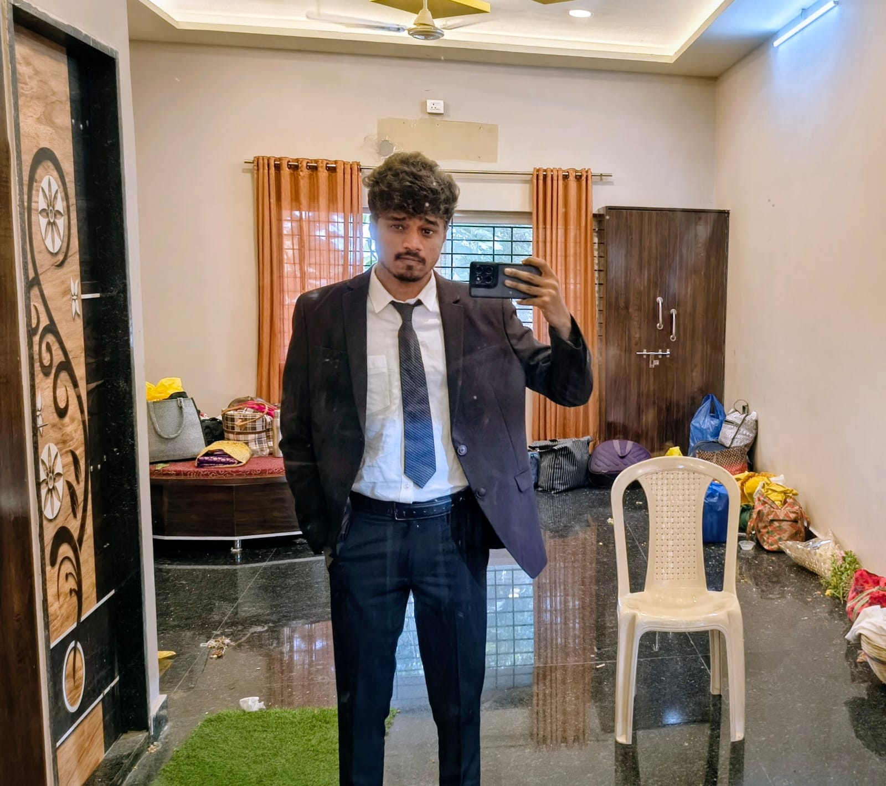

MY APPROACH
Learn by building
I like turning new ideas into small projects and learning as I go.
COMPUTER ENGINEERING STUDENT · INDIA
I build for the web
I’m a Computer Engineering student and aspiring full stack developer. I enjoy turning ideas into useful digital experiences and learning something new with every project.

Curious by natureA LITTLE ABOUT ME
I’m pursuing a B.E. in Computer Science and Engineering, with a growing interest in web development and full stack engineering.
I like making things that solve real problems. From shaping a page with HTML and CSS to exploring computer vision with OpenCV, I’m happiest when I can learn by building and keep improving the details.
India
B.E. Computer Science
Web & full stack development
A CLOSER LOOK
A few things that shape the way I learn and the things I like to build.
MY APPROACH
I like turning new ideas into small projects and learning as I go.
WHAT I ENJOY
I enjoy making useful things, from web pages to computer vision experiments.
ALWAYS IMPROVING
I keep refining my work, learning new tools, and getting better with each project.
TOOLS I’M LEARNING
SELECTED WORK
A personal website to share my background, skills, and work as I grow as a developer.
View on GitHubA project exploring traffic detection with OpenCV and computer vision.
Exploring computer visionFinding repositories you want.
View on GitHubHAVE A PROJECT IN MIND?